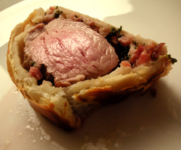

Filet im Teig
4,5 von 6speckwürfeli und feingeschnittener salbei in butter anbraten. das schweinefleisch kurz anbraten,
salzen und mit blätterteig und dem speck einwickeln. im ofen nicht zu heiss ca. 30 min backen.

speckwürfeli und feingeschnittener salbei in butter anbraten. das schweinefleisch kurz anbraten,
salzen und mit blätterteig und dem speck einwickeln. im ofen nicht zu heiss ca. 30 min backen.

Montagsplausch Nr. 92.